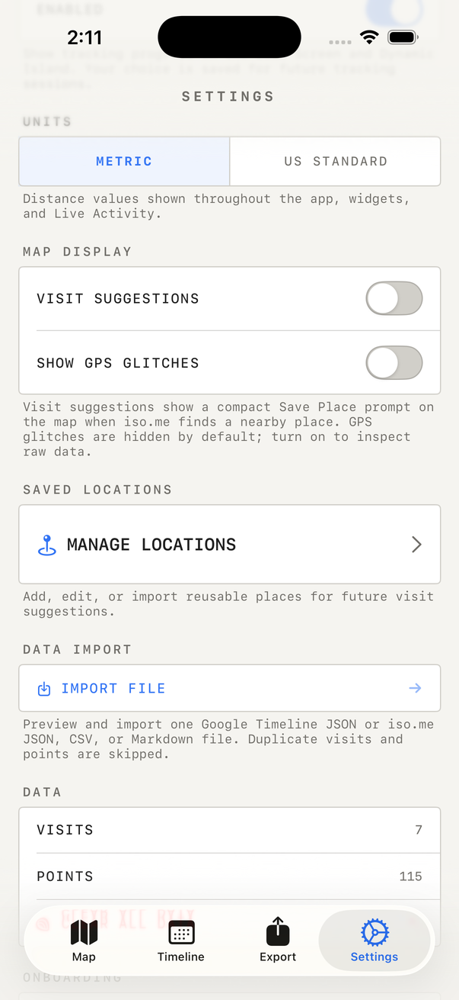
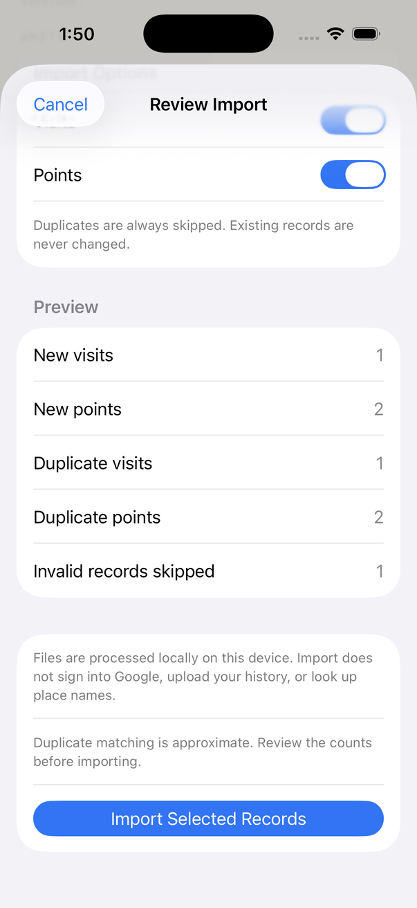
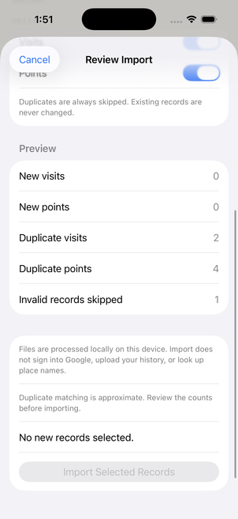

This guide documents the Google Timeline importer prepared for an upcoming iso.me update. The feature is awaiting review and is not announced as available in the App Store. Screenshots of iso.me use a preview build and synthetic history.
The transfer uses a file you choose. iso.me reads that file locally, shows a preview, and waits for you to confirm. The import does not sign into Google, upload your history, or request place names from a server.
Before you begin
- Use the phone that holds the Google Timeline history you want to export.
- Have iso.me on your iPhone, with the Google Timeline import update when it becomes available.
- Keep the original JSON file as a backup while you check the imported history.
This first version handles one file at a time, up to 50 MiB and 250,000 visits plus points. You can choose to import visits, points, or both. Raw location history contains coordinates and times; it does not contain ready made visits, and this importer does not infer them.
1. Export Google Timeline on iPhone
Google currently documents the export inside the Google Maps app. Its iPhone Timeline help page is the source for these steps.
- Open Google Maps and tap your account avatar.
- Go to Settings → Location & Privacy.
- Choose Export Timeline data.
- In the sharing options, choose Save to Files. Pick a folder you will recognize, then save.
The resulting file is named location-history.json. Leave it as JSON.

Exporting from Android instead?
On the Android device holding your history, open the system Settings app. Follow Location → Location services → Timeline, choose Export Timeline data, continue, and save the file. Google documents this separate path in its Android Timeline help.
Move the exported JSON to your iPhone using your usual file transfer method, then save it in Files. Google’s labels can vary by device or app version; follow the current help page if your menus differ.
Already have a Google Takeout archive?
You can use supported JSON from an existing export. If it is inside a ZIP, extract the archive first. Select individual JSON files rather than the ZIP or a folder.
| File contents | What can be imported |
|---|---|
Classic Location History, often Records.json, with a locations array | Timestamped location points |
Legacy Semantic Timeline with timelineObjects | Place visits and activity points that have usable times |
Device Timeline with semanticSegments, or an iOS array of segments | Supported visits and timed path points |
The filename alone does not guarantee compatibility. iso.me checks the contents. Untimed waypoints are skipped rather than given invented timestamps. An encrypted Timeline backup is not the JSON file this importer expects.
2. Open the importer in iso.me
- Open iso.me → Settings.
- Scroll past Saved Locations to Data Import.
- Tap the blue Import File button.
- Choose the Google JSON file in Files.

3. Review before you save
The Review Import sheet shows the filename, detected format, date range, new visits and points, and duplicate counts. It also counts invalid records and unsupported entries when present.

Turn Visits or Points off if you only want one type. Those controls change the counts for your selection. A raw history export keeps Visits off because it contains points only.
Choose Cancel to leave your journal unchanged. When the selection looks right, tap Import Selected Records. The completion summary reports the records added and the duplicates skipped.
What counts as a duplicate?
iso.me checks for duplicates both within your file and against the history already saved on your phone. It checks again when you confirm, so a preview is not a reservation to insert those records later.
- Points: the same timestamp rounded to the nearest second, with coordinates within 10 meters.
- Visits: arrival times within 60 seconds, departure times within 5 minutes, and coordinates within 100 meters. Visits with no departure only match other visits with no departure.
Matching is approximate. Nearby visits at similar times may be skipped, while records outside those tolerances may still be added. Existing names, notes, and confirmations are preserved; this operation adds new records and skips matches.

4. Check the imported days
Open the relevant dates in Timeline and inspect the visits or paths on the map. A file’s date range is not a promise that every day contains data. The preview formats times in your device’s local time zone, so a UTC timestamp can appear on the previous or following calendar day.
Some exports have coordinates without place names. Those records can still be useful, but this import does not look up missing names. Keep your original file until you are satisfied with the result.
If the import does not look right
I cannot find the new Google import
Check that you have a version of iso.me with the Google Timeline update. Older versions have an Import File button for iso.me backups without the Google preview described here.
The preview has points but no visits
That is expected for raw Location History. This version does not turn raw points into visits. A semantic export may include place visits already identified by Google.
The file is rejected
Select an extracted JSON file. ZIP, KML, GPX, and GeoJSON cannot be imported here. A damaged or unsupported JSON file, or one with no usable records, can also fail. Keep the error message and original file when asking for help.
The file is too large
Use smaller files from an existing export where available. This version cannot open a whole export folder or split a large JSON file for you. Avoid cutting a JSON file into arbitrary text chunks; each file needs a valid supported structure.
Import is disabled
There are no new records in the selected types, or both toggles are off. Review the duplicate counts and selection before trying another file.
Does importing remove anything from Google?
No. You are reading a saved export file. Any choice about deleting your Google history is separate from importing it into iso.me.
Sources and screenshot notes
Google’s iPhone and Android instructions were checked in Arc on October 25, 2026. Google’s website and menus may change. The iso.me screenshots come from simulator QA using synthetic records, not a personal location archive.
For your next backup, see the iso.me export and import guide. Import is free; exporting data from iso.me is a separate paid feature.